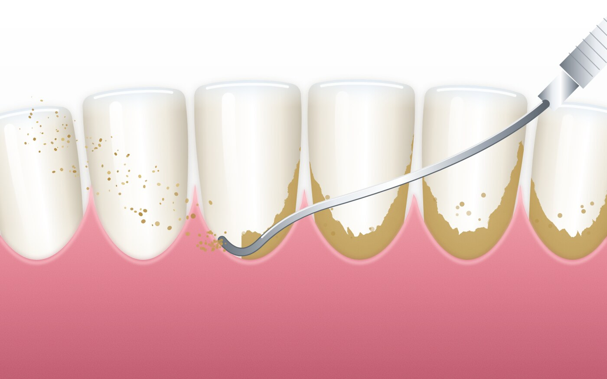

Treatments
진료 안내
인턴 1년, 레지던트 3년의 수련을 마친 전문의가 진료합니다. 임플란트와 교정을 제외한 치료는 의무대 안에서 합니다. 국군병원 진료가 필요하면 소견서나 의뢰서를 써 드리고, 소속 부대에서 가까운 국군병원에 직접 내원하시면 됩니다.
01 · Prevention
예방치료 · 스케일링과 불소도포
충치와 잇몸병은 생긴 뒤 치료하는 것보다 생기기 전에 막는 것이 훨씬 쉽습니다. 치석을 없애는 스케일링과 치아를 단단하게 하는 불소도포를 한 번에 받으세요.
- 스케일링
- 154건
- 불소도포
- 54건
2026년 9월 30일까지 본원에서 시행한 건수입니다.

스케일링 → 잇몸병 예방
치석은 칫솔로 닦이지 않는 세균 덩어리입니다. 그대로 두면 잇몸에 염증을 일으켜 피가 나고, 더 진행하면 치아를 받치는 뼈가 녹는 치주염이 됩니다. 스케일링으로 치석을 떼어 내면 잇몸 염증을 막을 수 있습니다.
불소도포 → 충치 예방
불소는 치아 겉면의 법랑질을 단단하게 하고, 초기 충치로 약해진 부분을 다시 굳게 만듭니다. 치아에 불소를 직접 발라 주면 산에 덜 녹아 충치가 덜 생깁니다.
본원은 사랑니 발치나 충치 치료 같은 치료를 앞둔 분께 초진 때 스케일링과 불소도포를 먼저 권합니다. 치석과 세균을 미리 줄여 두면 치료 부위의 감염 위험이 줄고, 치료 뒤 상처가 아물고 회복하는 과정이 한결 순조롭습니다.
스케일링으로 치석과 세균막을 걷어 낸 직후가 불소를 바르기 가장 좋은 때입니다. 깨끗해진 치아 표면에 불소가 바로 닿기 때문입니다. 한 번 방문으로 잇몸병과 충치를 함께 예방할 수 있고, 따로 올 필요도 없습니다.
- 스케일링 약 20~30분, 불소도포는 이어서 몇 분이면 끝납니다
- 6개월마다 받기를 권합니다. 잇몸에서 피가 나면 더 일찍 오세요
- 이런 분께 특히 권합니다: 잇몸에서 피가 나는 분, 치석이 눈에 보이는 분, 충치가 자주 생기는 분, 단 음료와 담배를 자주 하는 분
- 본원은 5% 불화나트륨 불소 바니시를 씁니다. 바른 뒤 4~6시간은 양치, 딱딱한 음식, 술을 피하세요
- 예약할 때 "스케일링이랑 불소도포 같이 받고 싶다"고 말하세요
02 · Caries & trauma
충치 치료
우식의 깊이와 범위에 따라 수복에서 근관치료까지 단계적으로 진행합니다.
- 충치 치료 전 초진 때 스케일링·불소도포를 먼저 권합니다
- 최소 삭제 원칙에 따른 직접 레진 수복
- 치수까지 진행된 우식은 근관치료 후 수복
- 파절·외상 치아의 당일 응급 처치
- 파노라마 및 구내 방사선 촬영으로 인접면 우식 진단
- 통상 1~3회 내원, 근관치료는 3~4회
03 · Oral surgery
사랑니와 발치
구강악안면외과 전문의가 매복 사랑니를 포함한 발치를 직접 시행합니다.
- 방사선 영상으로 맹출 방향과 하치조신경 위치 확인
- 단순 발치부터 매복 사랑니 발치까지 원내 시행
- 발치 후 2~3일 훈련·체력단련 조정 소견서 발급
- 익일 소독, 1주 후 발사
- 전신마취가 필요한 경우 소견서를 써 드리고 국군병원 내원 안내
- 발치 전 초진 때 스케일링·불소도포를 먼저 권합니다. 치료 뒤 회복이 순조롭습니다
04 · Prosthodontics
보철 치료
치과보철과 전문의가 손상된 치아의 형태와 기능을 회복합니다.
- 크라운, 인레이·온레이 수복 (기공소 제작 약 4~6주)
- 브릿지
- 근관치료 후 치아의 보철 수복
- 파절된 보철물의 수리와 재제작
- 틀니와 임플란트는 소견서를 써 드리고 국군병원 내원 안내
05 · Periodontics
잇몸 치료
이미 진행된 치은염·치주염은 치주 치료로 잇몸의 염증을 관리합니다. 정기 스케일링은 위의 예방치료를 보세요.
- 잇몸 속 깊은 치석을 긁어내는 치근활택술
- 치은염·치주염의 단계별 치료
- 지각과민(시린 이) 처치
- 칫솔질·치실 등 구강위생 교육
- 6개월 주기 정기 검진 권장
06 · TMD & bruxism
수면 이갈이와 턱관절 치료
이갈이·이악물기와 턱관절 장애(TMD)를 진단하고, 보톡스 진료와 교합안정장치, 스포츠 마우스가드로 치료합니다.


- 턱관절 소리, 입 벌림 제한, 턱 근육 통증을 진찰해 이갈이와 턱관절 장애 진단
- 보톡스 진료: 턱 근육(교근)에 보툴리눔 독소를 주사해 이갈이 힘과 근육 통증 완화
- 교합안정장치: 본을 떠 맞춤 제작하는 수면용 장치로 치아 마모와 턱관절 부담 감소
- 스포츠 마우스가드: 구기·격투 종목과 훈련 중 치아 외상을 막는 맞춤 제작
07 · Referral
국군병원에서 받는 치료
아래 치료는 국군병원 치과에서 시행합니다. 필요하면 이곳에서 진단하고 소견서나 의뢰서를 써 드립니다.
- 임플란트
- 틀니
- 교정 상담과 교정 치료
- 전신마취가 필요한 수술
- 의료진의 판단 또는 환자의 요청이 있는 경우
써 드린 소견서나 의뢰서를 가지고 소속 부대에서 가까운 국군병원에 직접 내원하세요. 외진 날에는 소속 부대의 이동 계획이 필요하니 미리 부대에 알리세요.
08 · Clinic
진료실과 장비
3사단 의무대대 건물 2층 치과 진료실입니다. 유닛 체어 두 대와 파노라마 X선 촬영기, 멸균기를 갖추고 있습니다. 치과 군의관 두 명과 치과 의무병이 진료합니다. 의료진 소개는 홈에 있습니다.
모든 기구는 한 사람 진료가 끝날 때마다 멸균합니다. 진료실 안에서는 휴대전화를 꺼 주세요.